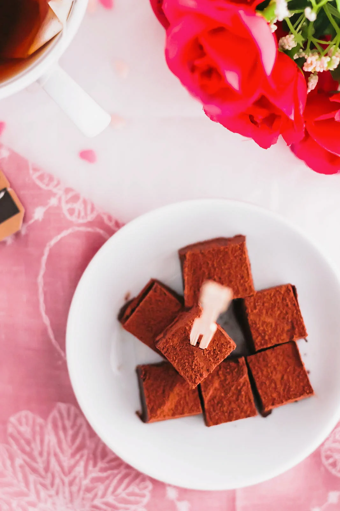

Earl Grey Name Chocolate
Description
These Earl Grey Nama Chocolates are creamy, rich and decadent creamy chocolates, filled with robust tea flavour. They're easy to make, and perfect for gifting!
What is Nama Choocolate?
Basically, nama chocolate is a super thick ganache -- think truffles, but in tiny square form.
It's a Japanese-style chocolate made with high quality chocolate, heavy cream chilled until it's firm, cut and dusted with cocoa powder.
Nama means "raw" in Japanese.
Ingredients:
- Heavy whipping cream (36% milk fat)
- Dark chocolate
- Earl grey tea
- Cocoa powder
Steps:
- Prepare a small container with parchment. In this recipe I use a 4" by 3" container.
- In a small saucepan, heat the heavy cream over low heat.
- Add in the Earl grey tea to steep with the cream.
- Whisk in the dark chocolate until melted.
- Transfer to the container and refrigerate for a few hours.
- Cut into small pieces and dust with cocoa.
- Enjoy!
